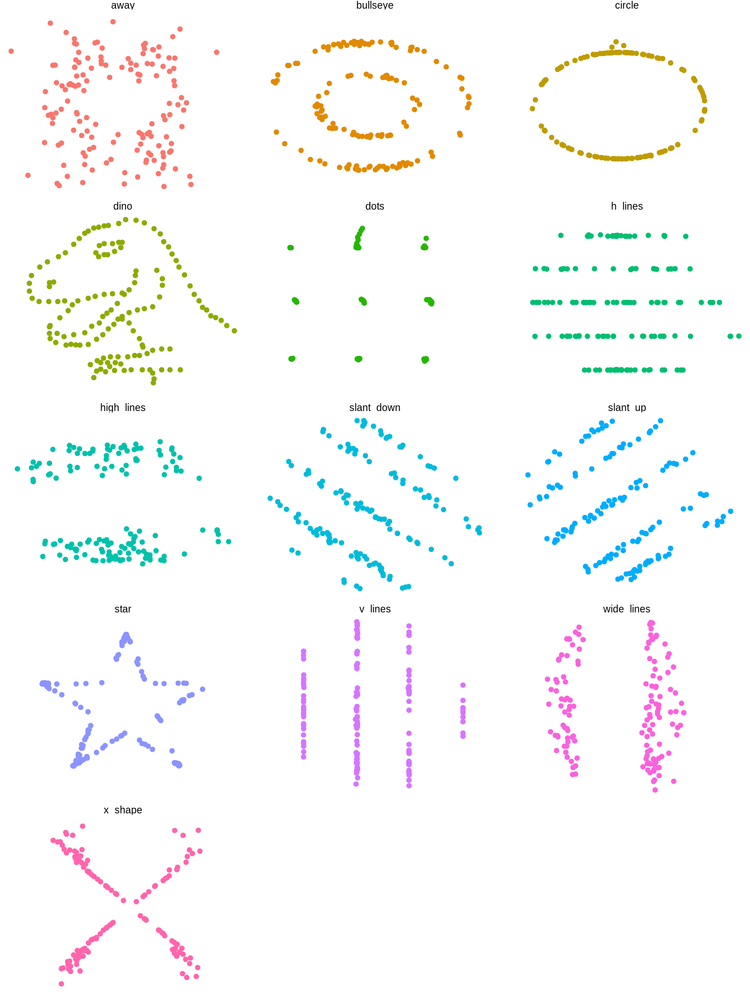

This package wraps the awesome Datasaurus Dozen dataset, which contains 13 sets of x-y data. Each sub-dataset has five statistics that are (almost) the same in each case. (These are the mean of x, mean of y, standard deviation of x, standard deviation of y, and Pearson correlation between x and y). However, scatter plots reveal that each sub-dataset looks very different. The dataset is intended to be used to teach students that it is important to plot their own datasets, rather than relying only on statistics.
The Datasaurus was created by Alberto Cairo. Datasaurus shows us why visualisation is important, not just summary statistics.
He’s been subsequently made even more famous in the paper Same Stats, Different Graphs: Generating Datasets with Varied Appearance and Identical Statistics through Simulated Annealing by Justin Matejka and George Fitzmaurice.
In the paper, Justin and George simulate a variety of datasets that the same summary statistics to the Datasaurus but have very different distributions.
This package looks to make these datasets available for use as an
advanced Anscombe’s
Quartet, available in R as anscombe.
Usage
To see that statistics are (almost) the same for each sub-dataset,
you can use dplyr.
library(datasauRus)
if (requireNamespace("dplyr")) {
suppressPackageStartupMessages(library(dplyr))
datasaurus_dozen %>%
group_by(dataset) %>%
summarize(
mean_x = mean(x),
mean_y = mean(y),
std_dev_x = sd(x),
std_dev_y = sd(y),
corr_x_y = cor(x, y)
)
}## Loading required namespace: dplyr## # A tibble: 13 × 6
## dataset mean_x mean_y std_dev_x std_dev_y corr_x_y
## <chr> <dbl> <dbl> <dbl> <dbl> <dbl>
## 1 away 54.3 47.8 16.8 26.9 -0.0641
## 2 bullseye 54.3 47.8 16.8 26.9 -0.0686
## 3 circle 54.3 47.8 16.8 26.9 -0.0683
## 4 dino 54.3 47.8 16.8 26.9 -0.0645
## 5 dots 54.3 47.8 16.8 26.9 -0.0603
## 6 h_lines 54.3 47.8 16.8 26.9 -0.0617
## 7 high_lines 54.3 47.8 16.8 26.9 -0.0685
## 8 slant_down 54.3 47.8 16.8 26.9 -0.0690
## 9 slant_up 54.3 47.8 16.8 26.9 -0.0686
## 10 star 54.3 47.8 16.8 26.9 -0.0630
## 11 v_lines 54.3 47.8 16.8 26.9 -0.0694
## 12 wide_lines 54.3 47.8 16.8 26.9 -0.0666
## 13 x_shape 54.3 47.8 16.8 26.9 -0.0656To see that each sub-dataset looks very different, you can draw scatter plots.
if (requireNamespace("ggplot2")) {
library(ggplot2)
ggplot(datasaurus_dozen, aes(x = x, y = y, colour = dataset)) +
geom_point() +
theme_void() +
theme(legend.position = "none") +
facet_wrap(~dataset, ncol = 3)
}## Loading required namespace: ggplot2